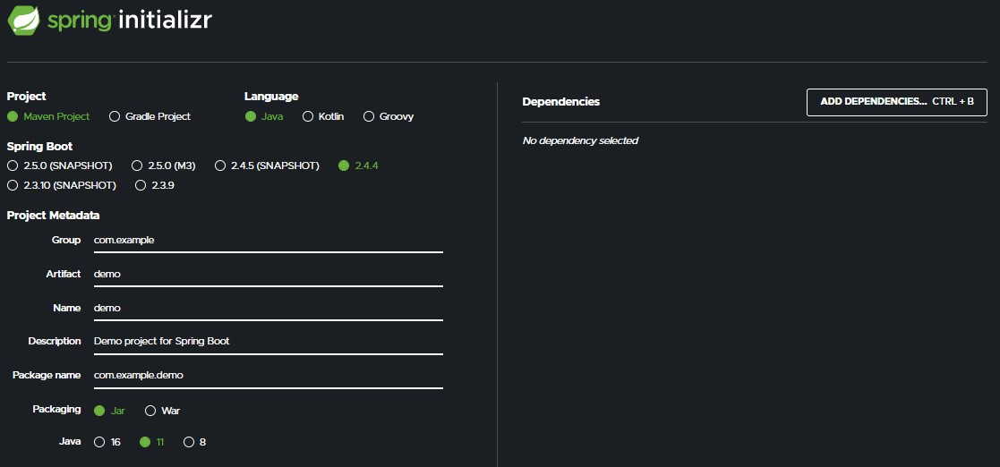
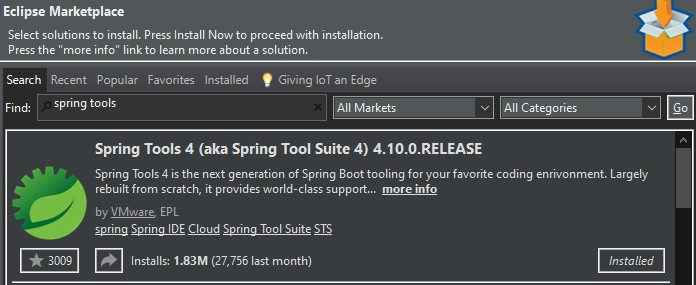
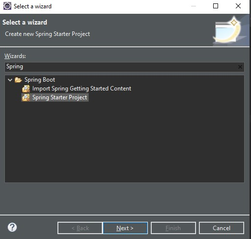

The quickest way to get started with Spring is to use Spring Boot.
This section provides a tutorial of how to use Spring Boot Initializr and run it from command line
You can skip to the next section if you want to Use Spring Boot in Java Eclipse EE. You can still import a project generated using the Initializr to Eclipse EE.
This link2 gives a basic overview on how to do a quick Hello World Program.
The tutorial provided shows how to run a Spring Boot project in Command Line.
Spring Boot Initializr3 allows you to generate a Spring Boot Project with your desired version, language, dependencies.
After generating the Spring Boot Project, you can run it after making some small changes. Refer to the links provided for more details.
An alternative is to use Java Eclipse EE, which we should all have installed for this class.
It is important to do this in Eclipse EE and not a different version of Eclipse, some features are only available to Eclipse EE.
There is a Spring Tools Suite in the Eclipse EE Marketplace. Downloading "Spring Tools" allows us to generate and run Spring Boot Projects from our IDE.
This link4 provides an overview of Spring Tools and how it works.
After downloading Spring Tools and restarting, you can now create a Spring Boot Project.
A Spring Boot Project created here should be virtually identical to one created in Spring Boot Initialzr provided you select the same options/dependencies.
To create a Spring Boot Project in Eclipse EE Click File->New->Other->Spring Starter Project
The most important part here are the dependencies. Your own Spring Project may require different dependencies than ours.
But to create our Calendar, we used the ones shown here.
Spring Data JPA allows persistence of data if you close a webpage but keep the server running, its a Java Persistence API.
HyperSQL is a built in SQL database for Spring, similar to how Ruby on Rails had a built in SQLite3.
Thymeleaf is a template engine for HTML, we need this to display HTML pages.
Spring Web is needed to make a Web app.
Upon Creating your project, it may take some time for Eclipse to set up all the dependencies and generate the necessary files.
When it is all finished, your directory should look something like this: